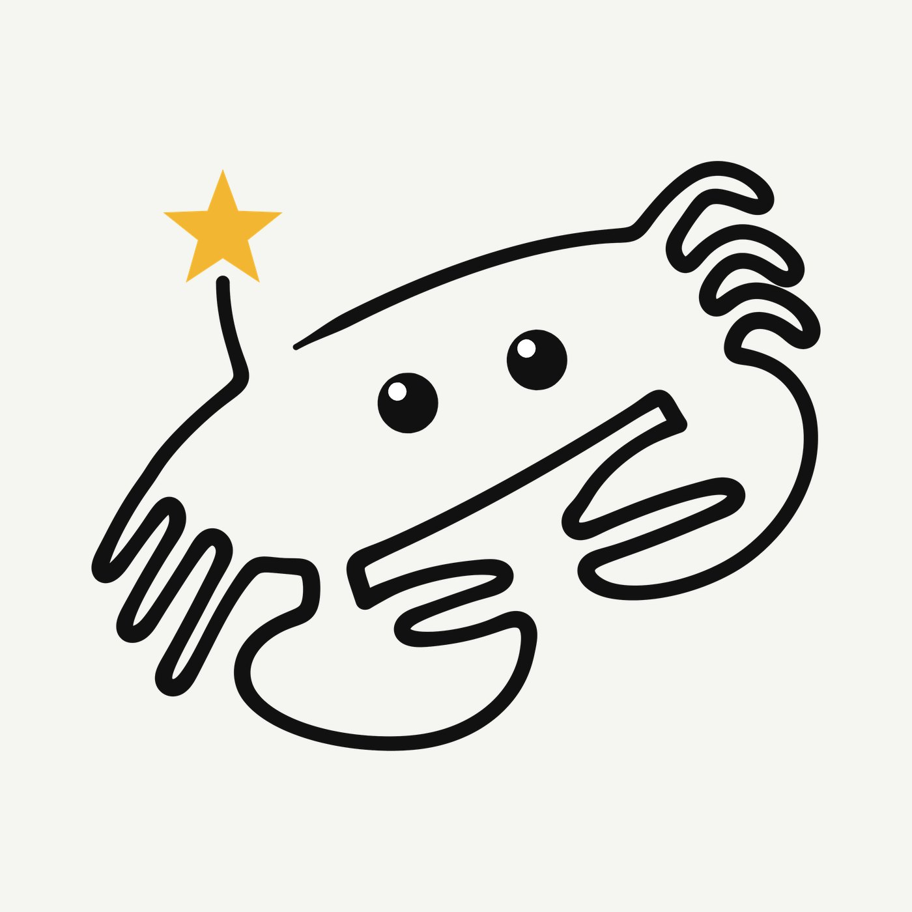

Coastal & ocean
Cute Crab with Red Heart
From A$3.49 (stickers)
Shop on RedbubbleStickers, tees, mugs and moreShop on Zazzle11 productsOn Zazzle
A friendly little crab, drawn as one continuous rounded line, peers out with two big glossy eyes. Its claws curl loosely and its legs ripple down one side like a wave. One feeler bends up and ends in a bright golden star, the only spot of colour in the picture. The drawing is deliberately simple, with soft outlines, no shading and plenty of empty space, so the crab's personality comes from its shape and its gaze. The dark line sits quietly on a black ground, and the star stands out like a small wish or a moment of wonder. It is meant to feel cheerful and a little bit magical, a playful nod to the seaside for anyone who loves gentle, whimsical character art.
You'll finish your order on Redbubble or Zazzle. They print it, ship it and look after returns.